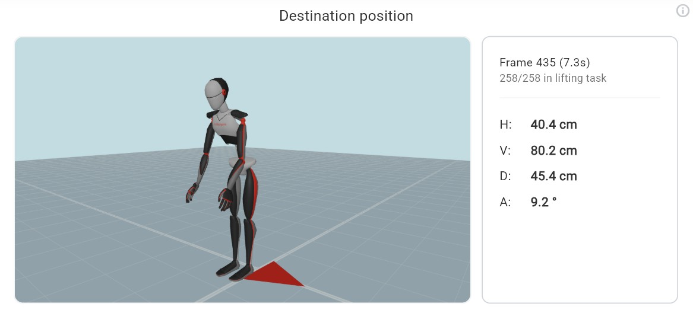
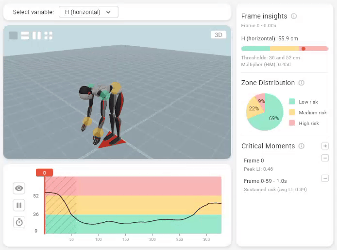

The NIOSH Lifting Equation is the most widely adopted ergonomic tool for evaluating manual lifting risks. Motionprint Ergo implements it in full — automatically extracting the biomechanical variables from your motion capture data and computing the Recommended Weight Limit and Lifting Index for every lift in your recording. This article explains how the equation works, what each multiplier represents, and how to interpret your results.
1 Overview
The NIOSH Lifting Equation calculates two key outputs for every assessed lifting task:
- Recommended Weight Limit (RWL) — the maximum load weight considered acceptable under the given task conditions, accounting for the worker's posture, the object's position, and the task frequency.
- Lifting Index (LI) — the ratio of the actual load weight to the RWL. A value above 1.0 indicates that the task exceeds the recommended limit and poses an elevated risk of musculoskeletal injury.
The equation is defined in the Applications Manual for the Revised NIOSH Lifting Equation (Waters et al., 1994; revised 2021). Motionprint Ergo uses this standard as its calculation basis.
Motionprint Ergo derives the horizontal distance (H), vertical hand height (V), vertical travel distance (D), and asymmetry angle (A) automatically from your motion capture data — no tape measure required.
2 The Seven Multipliers
The RWL is calculated by starting from a fixed Load Constant (LC = 23 kg) and applying six task-specific multipliers. Each multiplier has a value between 0 and 1 — the worse the condition, the lower the multiplier and the lower the resulting RWL.
A fixed reference weight representing the maximum acceptable load under ideal conditions. Configurable in NIOSH settings (default 23 kg).
Adjusts for the horizontal distance (H) from the midpoint between the worker's ankles to the midpoint between the hands. Greater reach increases H, reducing HM and the RWL. Computed continuously per frame.
Adjusts for the vertical height (V) of the hand midpoint above the floor. The optimal height is 75 cm; deviations above or below reduce the multiplier. Computed continuously per frame.
Adjusts for the vertical travel distance (D) of the hands between the start and end of the lift. D is derived from the V measurements at origin and destination: D = |V_origin − V_destination|. Longer vertical travel reduces the multiplier.
Adjusts for the asymmetry angle (A) between the horizontal projection of the load direction and the worker's stance direction — a measure of trunk twist. Computed continuously per frame.
Adjusts for lifting frequency, vertical hand height category, and shift duration. In Motionprint Ergo, frequency is calculated automatically from the recording: the number of lifting tasks within the trimmed recording is divided by the trimmed duration in minutes to give lifts per minute. That value — together with V height category and the shift duration you set — is used to look up FM from the standard NIOSH frequency table.
Adjusts for the quality of the grip between the worker's hands and the load. Values depend on both coupling quality and vertical hand height: Good is always 1.0; Poor is always 0.90; Fair is 0.95 by default, but improves to 1.00 when V ≥ 75 cm. Coupling quality is entered manually per lifting task.
3 Recommended Weight Limit (RWL)
The RWL brings all seven factors together into a single figure representing the maximum load considered safe for the assessed task conditions:
A low RWL does not necessarily mean the workplace is dangerous — it reflects the task conditions. If the actual load weight is at or below the RWL, the LI will be 1.0 or less, and the risk is considered acceptable.
4 Lifting Index (LI)
The Lifting Index expresses how the actual load compares to the Recommended Weight Limit:
The LI is the primary risk indicator reported by Motionprint Ergo. The four risk levels are:
| LI range | Risk level | Interpretation |
|---|---|---|
LI ≤ 1.0 |
Low | Acceptable for most workers. Task conditions are within the recommended limits. |
1.0 < LI ≤ 2.0 |
Moderate | Elevated risk for some workers. Consider task redesign or worker rotation. |
2.0 < LI ≤ 3.0 |
High | Significant risk for most workers. Job redesign is recommended. |
LI > 3.0 |
Very High | Unacceptable risk. Immediate intervention required before work continues. |
The LI risk levels are based on population-level data. An LI of 1.0 does not guarantee that the task is safe for every individual worker — it means that under NIOSH methodology the task is acceptable for the general working population. Workers with pre-existing conditions may require more conservative limits.
5 Composite Lifting Index (CLI)
When a worker performs two or more distinct lifting sub-tasks during a shift, the single-task Lifting Index is not sufficient to capture the cumulative physical demand. The NIOSH methodology provides the Composite Lifting Index (CLI) to aggregate overall risk across all sub-tasks.
Key concepts
- STLI (Single-Task Lifting Index) — the LI for each individual sub-task, calculated using that task's own frequency.
- FILI (Frequency Independent Lifting Index) — the LI for each sub-task calculated with FM set to 1.0, removing the frequency penalty. Used as input to the CLI formula.
- FIRWL (Frequency Independent RWL) — the RWL computed with FM = 1.0.
CLI formula
Tasks are first ranked by STLI from highest to lowest. The CLI is then calculated as:
Where each additional task contributes an incremental lifting index:
The cumulative frequency used to look up each FM value is the sum of frequencies from tasks 1 through i.
Users create multiple lifting moments on the visual timeline. Each moment has its own frame range, load weight, coupling rating, and optional modifiers. When two or more moments are defined, Motionprint Ergo automatically computes the CLI alongside individual STLIs. The report provides a moment selector to switch between individual task results, and a CLI Overview showing the full breakdown: ranked task table, cumulative frequency calculations, and the step-by-step ΔLI computation.
The CLI uses the same four risk levels — Low, Moderate, High, and Very High — as the single-task LI.
6 Reference Mass (LC)
The Load Constant (LC) is the reference mass from which the RWL calculation starts. Its default value of 23 kg follows the NIOSH Revised Lifting Equation. In Motionprint Ergo, the LC is configurable in the NIOSH report settings, allowing you to align with the applicable standard for your context. Four values are available, each derived from ISO 11228-1:
| Reference Mass | Standard | Population Coverage |
|---|---|---|
| 25 kg | EN 1005-2 & ISO 11228-1:2003 | 95% of men, 70% of women |
| 23 kg Default | NIOSH RNLE & ISO 11228-1:2021 | 99% of men, 75% of women |
| 15 kg | ISO 11228-1:2021 Table B.1 | 99% of men, 90% of women |
| 10 kg | ISO 11228-1:2021 Table B.1 | ~99% of the general population |
A lower reference mass produces a more conservative RWL, which is appropriate when the assessment needs to protect a broader portion of the workforce. Select the reference mass in the NIOSH settings page based on the applicable standard or the population you need to protect.
7 Analysis Mode: Peak Moment vs. Origin/Destination
Motionprint Ergo offers two analysis modes that determine how position variables are extracted from the motion capture recording. The mode is selected in the NIOSH report settings.
Analyzes only the pickup (origin) and placement (destination) positions, and uses the lower of the two resulting RWLs. This matches the standard NIOSH methodology as it would be performed manually.
Because motion capture records the entire lifting movement continuously, Motionprint Ergo measures and calculates all position variables throughout the whole recording. This mode finds the frame with the highest (worst-case) Lifting Index across the entire lift — capturing problematic mid-lift postures that a manual assessment, limited to two static snapshots, would miss entirely.
Peak Moment mode is a fundamental advantage of motion-capture-based assessment over manual methods. Manual NIOSH assessments are limited to two static measurements — origin and destination. Continuous motion capture data allows Motionprint Ergo to find the true worst-case posture anywhere within the lift, providing a more complete and conservative picture of risk.
8 Additional Modifiers
For tasks with non-standard conditions, Motionprint Ergo applies additional multipliers on top of the core NIOSH equation. Each of these modifiers can be enabled or disabled individually in the NIOSH report settings page.
| Modifier | Factor | When applied |
|---|---|---|
| Pf — Two-person lift | 0.85 | Load is carried by two workers simultaneously |
| Tf — Additional tasks | 0.80 | Worker performs other physically demanding tasks beyond lifting |
| Of — One-hand lift | 0.60 | Load is lifted with a single hand |
| eM — Extended duration |
0.97 >8–9 h
0.93 >9–10 h
0.89 >10–11 h
0.85 >11–12 h
|
Work shift exceeds 8 hours; factor scales with shift length per ISO 11228-1. Only applied when frequency exceeds 0.2 lifts/min. |

9 Implementation in Motionprint Ergo
Motionprint Ergo implements the full NIOSH Lifting Equation — including multi-task CLI — in a modular processing pipeline that supports both single-task and multi-task assessments.
Calculation workflow
Biomechanical variables (H, V, D, A) are extracted automatically from your motion capture data. User-provided inputs — load weight, coupling quality, lift frequency, and shift duration — are entered in the assessment setup panel.
Each of the seven multipliers is computed from the input data. HM, VM, DM, and AM are derived from motion data; FM and CM use the user-provided values. Any additional modifiers (Pf, Tf, Of, eM) are applied if enabled.
The multipliers are combined into the final RWL, and the load weight is divided by the RWL to produce the Lifting Index. For multi-task sessions, the Composite Lifting Index is calculated across all sub-tasks.
Results are presented across three report tabs. Score overview gives you everything a standard manual NIOSH assessment would produce: RWL, Lifting Index, risk level, and a full multiplier summary — ready to share or archive. In-depth analysis is for deep-diving into how the key variables (V, H, A, LI) behave over time, so you can pinpoint exactly which frames and postures are driving the risk score. You can also toggle on body risk indicators to instantly see colour-coded risk levels on the 3D model at the shoulders, wrists, and back. Findings lets you define and document your own observations to round out the report.
